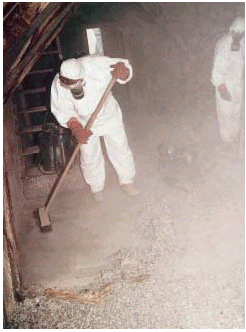
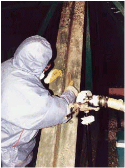
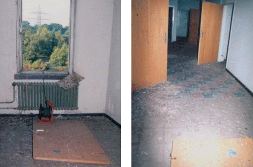

4 |
Gefährdungsbeurteilung bei Tätigkeiten in Arbeitsbereichen, die mit Taubenkot kontaminiert sind |
Tätigkeiten mit Kontakt zu Taubenkot sind nicht gezielte Tätigkeiten im Sinne der BioStoffV. Es ist eine Gefährdungsbeurteilung entsprechend § 7 der Bio-StoffV durchzuführen.
Maßgeblich für eine Gefährdung der Beschäftigten ist die Exposition. So führt Fegen, Bürsten, Schaufeln des trockenen Taubenkots vor allem in geschlossenen Räumen zu einer starken Staubentwicklung (siehe Abbildung 1). Dies stellt die Hauptgefahrenquelle für die Beschäftigten dar. Die in der natürlichen Umgebung gemessenen Hintergrundwerte wurden bei Untersuchungen durch die ehemalige TBG zur Belastung der Beschäftigten bei Ausübung der o.g. Tätigkeiten um das tausend- bis hunderttausendfache überschritten [Albrecht et. al., 2002]. Dieser Staub kann neben Pilzsporen auch Infektionserreger enthalten. So konnten in entsprechenden Luftproben auch Chlamydien (Chlamydophila psittaci, Erreger der Papageienkrankheit) nachgewiesen werden.

Abbildung 1: Staubbildung beim Kehren mit Besen

Abbildung 2: Reinigung mit Bürsten
Die Staubentwicklung ist bei feuchtem Taubenkot geringer. Jedoch stellen Arbeiten, bei denen tätigkeitsbedingt der Abstand des Gesichtes zu der Verschmutzung weniger als eine Armlänge beträgt, ebenfalls eine Gefährdung dar, weil in Flüssigkeitspartikeln enthaltene Mikroorganismen eingeatmet werden können.
Dabei ist, wie in Abschnitt 3.1 erwähnt, zu beachten, dass frischer Taubenkot i.d.R. ein höheres infektiöses Potenzial besitzt als Taubenkot, der bereits über Wochen oder Monate lagert und dabei austrocknet. Neben der Infektionsgefährdung ist auch die sensibilisierende und toxische Wirkung zu berücksichtigen. Darüber hinaus besitzt Taubenkot auch eine ätzende Wirkung.
Eine Hilfestellung zur Gefährdungsbeurteilung bietet dabei das Fließschema in Anhang 2.
Oftmals werden Arbeiten in Bereichen durchgeführt, die zwar mit Taubenkot kontaminiert sind, bei denen der Beschäftigte damit aber nicht in Kontakt kommt, z.B. bei Begehungen.
Diese Tätigkeiten können der Schutzstufe 1 zugeordnet werden, Schutzmaßnahmen der TRBA 500 "Allgemeine Hygienemaßnahmen: Mindestanforderungen" (vgl. Abschnitt 5.1) sind ausreichend.
Werden Tätigkeiten mit Kontakt zu Taubenkot durchgeführt, sind diese Tätigkeiten entsprechend der BioStoffV der Schutzstufe 2 zuzuordnen.
Bei der Auswahl der Schutzmaßnahmen ist zu unterscheiden zwischen Tätigkeiten mit geringfügiger Exposition und Tätigkeiten mit erhöhter Exposition. Um geringfügige Exposition handelt es sich, wenn es nur für kurze Zeit zu einem Kontakt mit geringen Mengen an Taubenkot kommt, wie z.B. das Entfernen einzelner Nester und die Durchführung von Wartungs- und Reparaturarbeiten, sofern dabei nur in geringem Ausmaß Staub und Aerosole freigesetzt werden.
Bei diesen kurzfristigen Arbeiten müssen keine zusätzlichen Reinigungsarbeiten durchgeführt werden. Jedoch ist auch hier auf besondere Hygienemaßnahmen zu achten. Die Persönlichen Schutzmaßnahmen entsprechend Abschnitt 5.2.2 sind zu beachten.
Werden Tätigkeiten in Arbeitsbereichen durchgeführt, die stark mit
Taubenkot kontaminiert sind, müssen vor Beginn der Tätigkeiten die Bereiche
sachgerecht gereinigt und danach soweit möglich desinfiziert werden 1). Auch diese Tätigkeiten sind entsprechend
der BioStoffV der Schutzstufe 2 zuzuordnen.
1 Eine Liste geeigneter Desinfektionsmittel enthält die Desinfektionsmittelliste des VAH (Verband für Angewandte Hygiene e.V.)
Eine Staubfreisetzung ist so weit wie möglich zu vermeiden.
Die Reinigung dieser Arbeitsbereiche sollte daher nicht unter Verwendung von Schaufeln und Besen,
Hochdruckreinigern oder durch Abbürsten (siehe Abbildung 2) geschehen, da Mikroorganismen
bei den beschriebenen Tätigkeiten zusammen mit Staub- oder
Flüssigkeitspartikeln verstärkt in die Luft freigesetzt werden.

Abbildungen 3a, b: Taubenkotkontamination, die gut absaugbar ist
Häufig liegt der Taubenkot fein verteilt auf dem Boden oder entsprechenden Einrichtungsgegenständen, wenn die Tauben nicht lange Zutritt zu dem Gebäude hatten oder die Räumlichkeiten nicht als Nistplätze nutzten. (vergleiche Abbildung 3a, b). Solche Flächen können meist abgesaugt werden, wodurch die Staubfreisetzung minimiert wird (vgl. Angaben zu Abschnitt 5.2.1, Filter der Kategorie H). Aufgrund der geringeren Staubbelastung ist die unter 5.2.2 aufgeführte Persönliche Schutzausrüstung bei solchen Tätigkeiten ausreichend.
Bei stärkeren Kotablagerungen ist ein einfaches Absaugen oft nicht möglich, da hier der Kot zunächst mit zusätzlichen Mitteln, wie z.B. Schaufeln aufgelockert werden muss. Dadurch ist eine erhöhte Staubbildung gegeben und die Schutzmaßnahmen entsprechend Abschnitt 5.2.3 sind anzuwenden.